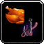
This WotLK Fishing and Cooking leveling guide will show you the fastest way to level Fishing and Cooking from 1 to 450 in Wrath of the Lich King Classic.
Since leveling your fishing takes a long time, it's best to level these professions together. You'll discover that it requires a lot of patience and time to build your skill level up to the maximum level. You will have to catch a lot of fish to get from start to finish.
I recommend trying Zygor's 1-80 Leveling Guide if you are still leveling your character or you just started a new alt. The guide will help you to reach level 80 a lot faster.
Level Fishing to 75
- Go to Bloodhoof Village in Mulgore and learn Cooking from Pyall Silentstride.
- Buy
 Recipe: Brilliant Smallfish and Recipe: Longjaw Mud Snapper from Harn Longcast
Recipe: Brilliant Smallfish and Recipe: Longjaw Mud Snapper from Harn Longcast - Buy a
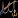
Fishing Pole and 1x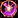
Shiny Bauble from Harn Longcast. Fishing suppliers often sell 1-2 Aquadynamic Fish Attractor, so buy them when they are available but keep them for later use when you will need a lot higher fishing. - Learn Fishing from Uthan Stillwater.
- Equip your fishing pole, attach a Shiny Bauble, and fish from Stonebull Lake until your fishing skill reaches 75. You will catch about 60 Raw Brilliant Smallfish and some Raw Longjaw Mud Snapper.
- Learn Journeyman Fishing from Uthan Stillwater.
- Go to Goldshire in Elwynn Forest and learn Cooking from Tomas. He is the cook inside the Lion's Pride Inn kitchen.
- Buy Recipe: Brilliant Smallfish and Recipe: Longjaw Mud Snapper from Tharynn Bouden
- Buy a Fishing Pole and 1x Shiny Bauble from Tharynn Bouden. Fishing suppliers often sell 1-2 Aquadynamic Fish Attractor, so buy them when they are available but keep them for later use when you will need a lot higher fishing.
- Learn Fishing from Lee Brown. He is at the lake east of Goldshire.
- Equip your fishing pole, attach a Shiny Bauble and fish from any lake near Goldshire until your fishing skill reaches 75. You will catch about 60 Raw Brilliant Smallfish and some Raw Longjaw Mud Snapper.
- Learn Journeyman Fishing from Lee Brown.
Fishing 75-165 | Cooking 1-125
-
Go to Thunder Bluff and fish in the pond near Thunder Bluff's auction house until your skill reaches 165. You don't have to use any lures. Don't forget to visit
 Kah Mistrunner between fishing skill 125 and 150, to train Expert Fishing!
Kah Mistrunner between fishing skill 125 and 150, to train Expert Fishing! -
You should catch about 25 Raw Brilliant Smallfish, 100 Raw Longjaw Mud Snapper, and 40 Raw Bristle Whisker Catfish.
-
Buy around 40x Bright Baubles from
Sewa Mistrunner.
Cooking
-
Learn the recipe
Recipe: Brilliant Smallfish, and cook all your fish. This should take your cooking skill above 50. Stop making them at 65 if you caught too many and sell the rest at the Auction House. -
Learn Journeyman Cooking from Aska Mistrunner. Then learn
Recipe: Longjaw Mud Snapper, and cook all your Longjaw Mud Snapper. Your cooking skill should rise to above 100. You can stop making them at around 115 and sell the rest at the Auction House. -
Buy the
Recipe: Bristle Whisker Catfish from Naal Mistrunner in Thunder Bluff. -
Learn
Recipe: Bristle Whisker Catfish and then cook all your fish. Your cooking skill must reach at least 125. -
Train Expert Cooking from Aska Mistrunner.
-
Fish in the canals of Stormwind City until your skill reaches 165. You don't have to use any lures. Don' forget to visit
 Arnold Leland between fishing skill 125 and 150, to train Expert Fishing!
Arnold Leland between fishing skill 125 and 150, to train Expert Fishing! -
You should catch about 25 Raw Brilliant Smallfish, 100 Raw Longjaw Mud Snapper, and 40 Raw Bristle Whisker Catfish.
-
Buy around 40x Bright Baubles from
Catherine Leland.
Cooking
-
Find Catherine Leland in Stormwind City and buy
Recipe: Bristle Whisker Catfish. -
Learn the recipe
Recipe: Brilliant Smallfish and cook all your fish. This should take your cooking skill above 50. Stop making them at 65 if you caught too many and sell the rest at the Auction House. -
Learn Journeyman Cooking from Stephen Ryback in Stormwind City. Then learn
Recipe: Longjaw Mud Snapper, and cook all your Longjaw Mud Snapper. Your cooking skill should rise to above 100. You can stop making them at around 115 and sell the rest at the Auction House. -
Learn
Recipe: Bristle Whisker Catfish and then cook all your fish. Your cooking skill must reach at least 125. -
Train Expert Cooking from Stephen Ryback.
Fishing 165-225 | Cooking 125-225
Start using Bright Baubles.
Fish in Dustwallow Marsh, Stranglethorn Vale, Alterac Mountains, or Arathi Highlands until Fishing 225. Make sure that you fish at the marked locations! Do not fish in the ocean!
You will catch about 80 Raw Bristle Whisker Catfish and some 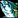
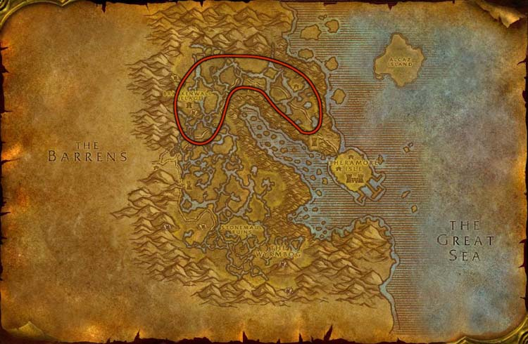
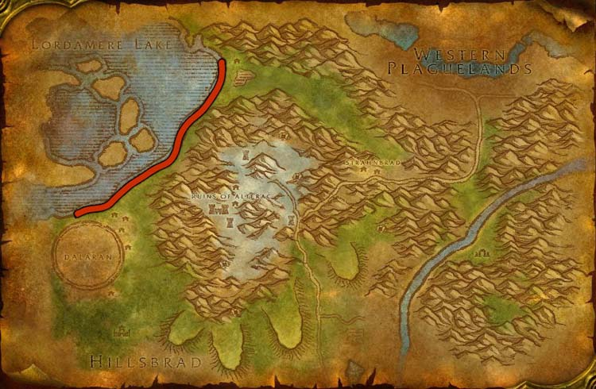
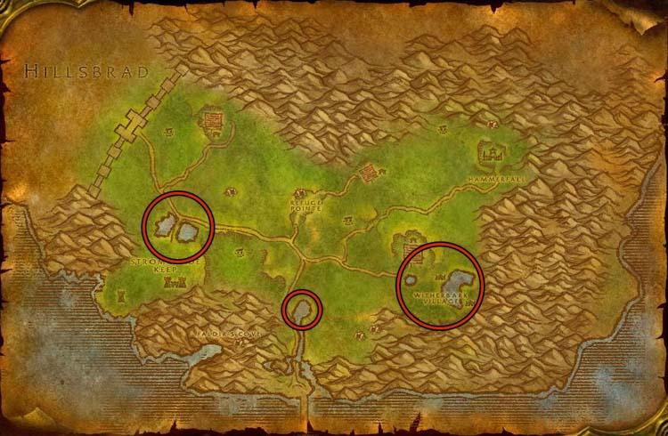
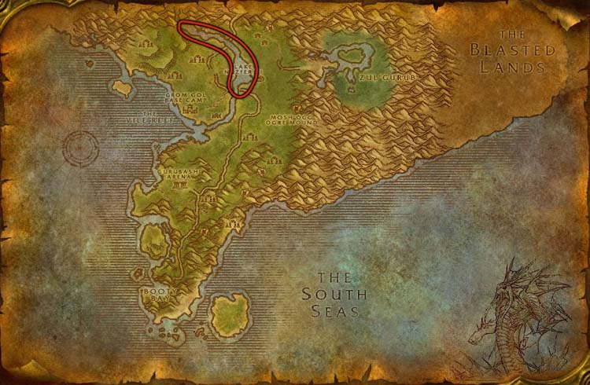
Cooking
-
Cook all your Raw Bristle Whisker Catfish. Your cooking skill should rise close to 175. If you don't reach 175 cooking skill, catch more fish.
-
Go to Booty Bay in Stranglethorn Vale.
-
Find Kelsey Yance and buy these two recipes:
Recipe: Mithril Head Trout, Recipe: Filet of Redgill. (He is in the large building at the end of the ship dock in Booty Bay. Enter the building and make an immediate left.) -
Learn
Recipe: Mithril Head Trout and start cooking Mithril Head Trout. Your cooking skill should rise to 225. Stop cooking at 225 and keep any remaining Raw Mithril Head Trout. -
Horde: Go to Thunder Bluff. Learn Artisan Cooking from
Aska Mistrunner and Artisan fishing from Kah Mistrunner.Alliance: Go to Stormwind City. Learn Artisan Cooking from
Stephen Ryback and Artisan fishing from Arnold Leland. -
Find Gikkix in Tanaris and buy these recipes:
Recipe: Nightfin Soup, Recipe: Poached Sunscale Salmon
{kind=link}
Getting a better fishing Pole
Up to this point, any extra fishing skill from the fishing pole wasn't needed, but I would recommend getting a better Fishing pole for the upcoming parts. You will simply catch less junk in higher-level areas with the extra +25 or +20 Fishing skill.
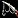 Nat's Lucky Fishing Pole | +25 Fishing | Reward from the |
| Nat Pagle's Extreme Angler FC-5000 | +20 Fishing | Reward from the |
| Seth's Graphite Fishing Pole | +20 Fishing | Reward from the |
| Big Iron Fishing Pole | +20 Fishing | You can buy it from the Auction House. But it can be expensive, so it's not always worth buying it. |
Fishing 225-255 | Cooking 225-295
- Travel to Feralas and buy the Recipe: Baked Salmon recipe from Sheendra Tallgrass / Vivianna.
- Fish in the marked lakes until you reach Fishing 255. Keep using Bright Baubles.
- Cook some of the remaining Mithril Headed Trout. You can stop at around 245 and sell the rest.
- Learn Recipe: Filet of Redgill and make as many as you can.
- Learn the Recipe: Nightfin Soup and Recipe: Poached Sunscale Salmon recipes, then make as many as possible. You will most likely reach 295. (stop when they turn grey)
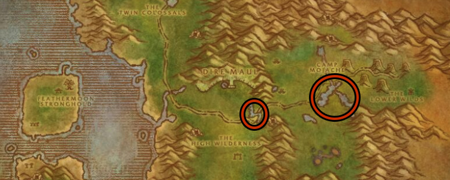
Fishing 255-275 | Cooking 295-300
-
Go to Jademir Lake (Feralas), Eastern Plageulands, or Wintersrping, and level Fishing to 275.
-
You can keep using Bright Baubles but using Aquadynamic Fish Attractor is recommended for these few levels. (You will catch a lot of junk with both)
-
Learn
Recipe: Baked Salmon and cook Baked Salmon until Cooking 300. (probably only have to cook 5) You can sell any remaining Fish at the Auction House.
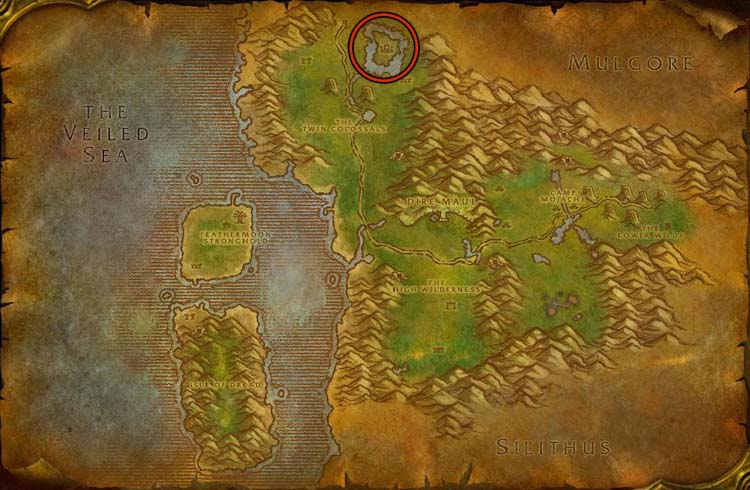
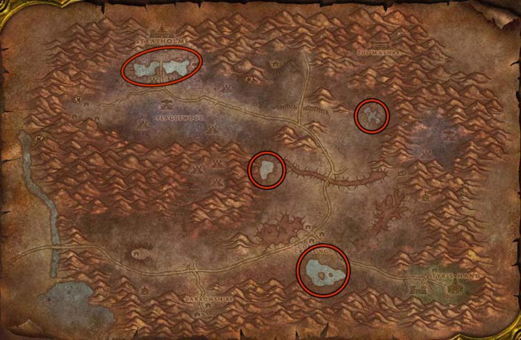
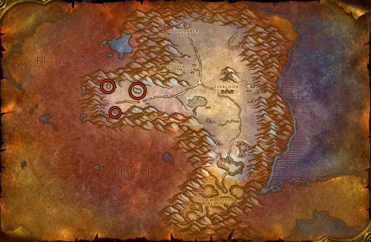
Learning Master Fishing and Cooking at Outland
- Travel to Cenarion Refuge in Zangarmarsh.
- Learn Master Cooking from Naka in the inn.
- Learn Master Fishing from Juno Dufrain in Zangarmarsh. He is standing by the lake.
- If you are out of lures, you can buy Bright Baubles from Juno Dufrain.
- Buy Recipe: Feltail Delight from Zurai / Doba (read the Kurenai part below if you can't talk to Doba)
- Buy Recipe: Blackened Trout from Gambarinka / Doba.
Kurenai Reputation
Alliance characters start as 'Unfriendly' with the Kurenai, so you can't buy recipes from  Doba if you haven't completed any quests in Zangarmarsh yet.
Doba if you haven't completed any quests in Zangarmarsh yet.
- Talk to Ikuti at the Orebor Harborage. Pick up
 Ango'rosh Encroachment and Daggerfen Deviance from him.
Ango'rosh Encroachment and Daggerfen Deviance from him. - Interact with the Wanted Poster near Ikuti and pick up the Wanted: Chieftain Mummaki quest. (if you face him, the poster is to your left)
- Completing these 3 quests will give you enough reputation to reach Neutral with the Kurenai faction then Doba will sell you his cooking recipes.
Fishing 275-320 | Cooking 300-350
Fishing to 320
Go to the small lake next to the graveyard outside the eastern exit from Shattrath City, then Fish in Terokkar Forest until fishing skill 320. Keep using Bright Baubles.
You can fish in other places, but don't go to flying-restricted areas or the big lake near Shattrath City because they require a lot higher fishing skill, and you will get more junk!
You should catch at least 20x Golden Darter, 70x Barbed Gill Trout, and 15x Spotted Feltail.
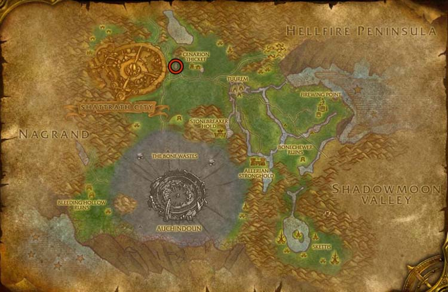
Cooking to 350
-
Buy
Recipe: Golden Fish Sticks and Recipe: Spicy Crawdad from Innkeeper Biribi / Rungor. -
Learn
Recipe: Feltail Delight and cook all your fish. -
Learn
Recipe: Blackened Trout and cook Blackened Trout until 320 -
Visit Kylene, the barmaid in the inn on the northeast side of Shattrath's Lower City. Learn Stewed Trout and Cook all the remaining Trout as Stewed Trout.
-
Learn
Recipe: Golden Fish Sticks, then cook all your Golden Darter. Your cooking skill will be around 350.
Fishing 320-360 and Cooking 350-400
-
Travel to Vengeance Landing in Howling Fjord and learn Grand Master cooking from
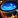
Thomas Kolichio. -
Learn Dalaran Clam Chowder, Smoked Rockfin, and Baked Manta Ray from the Cooking trainer.
-
Fish from 320 to 360 next to Vengeance Landing's fishing trainer
Angelina Soren. She is standing on the pier. Keep using Bright Baubles. -
Cook the Rockfin Grouper into Smoked Rockfin. Your cooking skill should rise to about 375.
-
Cook all your Imperial Manta Ray into Baked Manta Ray and Succulent Clam Meat (open Darkwater Clams) into Dalaran Clam Chowder. Your cooking skill must rise to at least 400.
-
Return to the cooking trainer. Learn Black Jelly and cook all your Borean Man O' War. This should take your cooking skill to about 415.
-
Train Grand Master Fishing from
Angelina Soren. She is on the dock.
-
Travel to Valiance Keep in Borean Tundra and learn Grand Master cooking from
Rollick MacKreel. -
Learn Dalaran Clam Chowder, Smoked Rockfin and Baked Manta Ray from the Cooking trainer.
-
Fish within the dock area of Valiance Keep from 320 to 360. Keep using Bright Baubles. If you start catching Bonescale Snapper, you are in the wrong place.
-
Cook the Rockfin Grouper into Smoked Rockfin. Your cooking skill should rise to about 375.
-
Cook all your Imperial Manta Ray into Baked Manta Ray and Succulent Clam Meat (open Darkwater Clams) into Dalaran Clam Chowder. Your cooking skill must rise to at least 400.
-
Return to the cooking trainer. Learn Black Jelly and cook all your Borean Man O' War. This should take your cooking skill to about 415.
-
Train Grand Master Fishing from
Old Man Robert (he is next to the cooking trainer).
Fishing to 450 and Cooking to 450
Fishing to 450
Travel to Wintergrasp and fish in any water from Fishing skill 360 to 450.
60 from one of these fish below is enough to level cooking to 450, so after that, you can go anywhere in Northrend to finish leveling fishing to 450.
Cooking to 450
The Cooking trainers won't teach you any more recipes, you have to buy the cooking recipes from Derek Odds (Alliance) or Misensi (Horde) for 3x 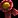
Epicurean's Award
Epicurean's Award is rewarded for completing the daily cooking quests. You will get 1x Epicurean's Award a day.
You can get the daily quests from Katherine Lee (Alliance) or Awilo Lon'gomba (Horde) in Dalaran.
- Only 1 quest can be completed each day.
- Only 1 out of the 5 possible quests will be offered each day. This is random.
- Requires Cooking 350.
- Requires level 65.
Northern Spices
Every recipe from this point will require at least 1x 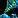
You can get them from the daily cooking quests, buy them at the Auction House, or buy 10x Northern Spices for 1x Epicurean's Award at the vendor near your cooking trainer at Dalaran.
Cooking
Buy one of these recipes below from Derek Odds (Alliance) or Misensi (Horde) and make around 60. (depends on which fish you have 60 of)
- 60x
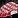
Firecracker Salmon - 60x Glacial Salmon, 60x Northern Spices - 60x
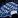
Spicy Blue Nettlefish - 60x Nettlefish, 60x Northern Spices - 60x Poached Northern Sculpin - 60x Musselback Sculpin, 60x Northern Spices